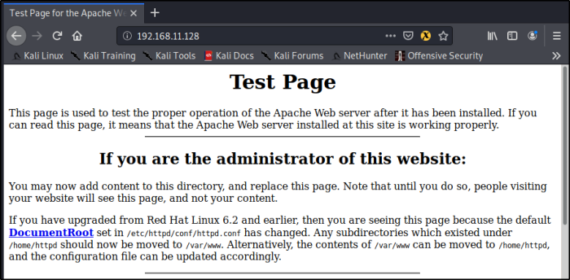
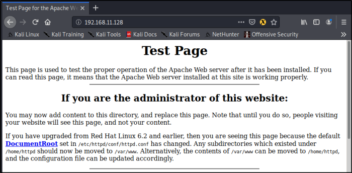
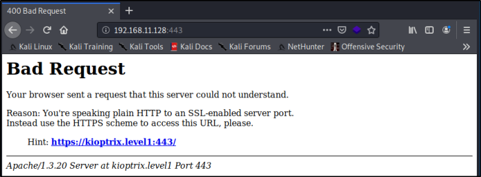
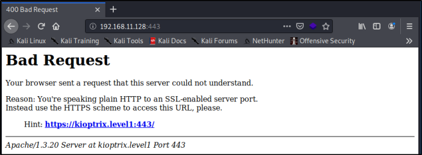
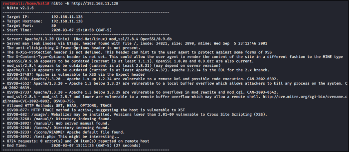

Enumerating with HTTP/HTTPS - Part 1
The first idea you can have is to go to the webiste:
In this case go for port 80 and 443
Take notes like:
80/443 - IP ADDRESS - TIME
Default Web Page - Apache - PHP
Port 80:
 

Port 443:
 

If we click on links we can get even more info, like Webserver Version, Hostname and a Path 

Nikto: Web Vulnerability Scanner
